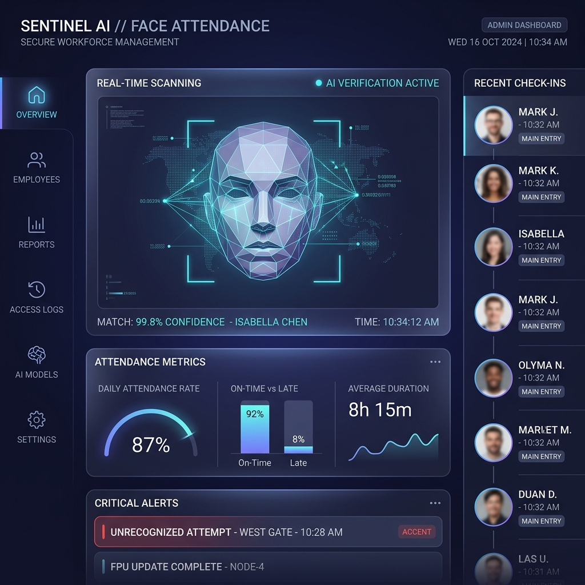

Enterprise Ready v1.0
The Future of Identity Verification
Proxy.ai is a next-generation facial recognition attendance system featuring passive ML anti-spoofing, real-time YOLO object detection, and zero-configuration standalone deployment.
Download for Windows
Requires Windows 10/11 • 1.8GB
99.8%
Accuracy Rate
0-Config
Standalone Install
300ms
Recognition Speed

Anti-Spoofing Active
Screen & Photo blocked
YOLOv8 Live
Phone detection running